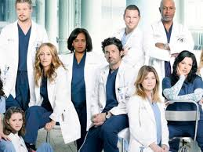

Greys Anatomy
Uma série de médicos

Vamos contar um pouco da história...
Em Grey's Anatomy, os médicos do Grey Sloan Memorial Hospital/Seattle Grace
Hospital lidam diariamente com casos de vida ou morte. É um no outro que eles
encontram apoio, conforto, amizade e até mesmo amor. Juntos, eles se esforçam
para conciliar os dramas profissionais com os pessoais, descobrindo que ambos
podem – e vão – se misturar no meio do caminho. Entre os funcionários do local
está Meredith Grey (Ellen Pompeo), filha de um cirurgião conceituado e recém-chegada
ao programa de residência. Ela divide as preocupações do ofício com os internos Cristina
Yang (Sandra Oh), Izzie Stevens (Katherine Heigl), Alex Karev (Justin Chambers) e George
O'Malley (T. R. Knight). Todos passam pela supervisão de três renomados doutores: Miranda
Bailey (Chandra Wilson), uma residente sênior que trabalha para ajudar Derek Shepherd (Patrick
Dempsey), chefe de neurocirurgia e interesse amoroso de Grey; Preston Burke (Isaiah Washington),
chefe do departamento de cardio e futuro noivo de Yang; e Richard Webber (James Pickens Jr.), chefe
de cirurgia e cirurgião geral adjunto. Cada um deles luta para sobreviver em meio a longos expedientes
e agitados treinamentos, dando o melhor de si nessa carreira tão importante quanto difícil.
.jpeg)